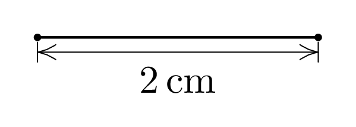
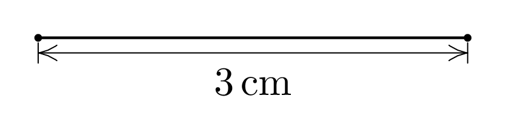
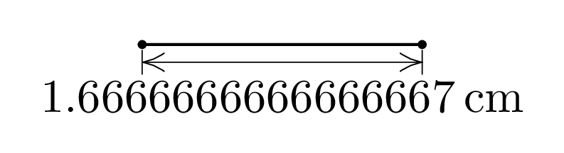
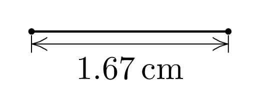

Formatting metapost labels
Posted on February 27, 2025
The standard way to typeset labels in metapost is using label(btex ... etex, pos), which uses TeX to typeset the label and then includes it in the metapost graphic. ConTeXt simplifies the user interface a little: instead of using btex ... etex, one can simply use label("...", pos), and the string argument is typeset using ConTeXt and included in the meapost graphic. However, both of these are cumbersome to use for dynamically generated labels (i.e., labels whose text depends on the value of some metapost variable). In this post, I show how to use fmtlabel, makes it simple to use dynamically generated labels.
Let me illustrate this by an example. Suppose I want to create a metapost \useMPgraphic such that
\useMPgraphic{example}{length=2}
gives
and
\useMPgraphic{example}{length=3}
gives
Such a command is rather straight forward to write in metapost:
\setupMPvariables[example][length=3, sy=2bp]
\startuseMPgraphic
newpair
origin
lengthcm0
newnumeric
21bp
draw
drawdotwithpenpencirclescaled1.5bp
drawdotwithpenpencirclescaled1.5bp
for
drawupdownscaledshifted
withpenpencirclescaled0.2bp
endfor
drawdblarrow
withpenpencirclescaled0.2bp
labelbot"\switchtobodyfont[8pt]$\unit{"decimallength"cm}$"
0.50
\stopuseMPgraphic
Here I have used the MPvar method to pass variables from TeX to metapost. The above code can then be used to produce the examples above (except that I don’t like the default metapost arrows, so I am using old code borrowed long time ago from Donald Knuth’s webpage; more on that at the end).
The label command is a bit clumsy to write:
decimal \MPvar{length} converts \MPvar{length} (which is a numeric value) to a metapost string), which we then concatenate with other formatting instructions.
However, apart from being clumsy to write, the above code gives unusable output when length is not an integer. For example
\useMPgraphic{example}{length=5/3}
gives
Hmm … it would be nice if we could round to two decimal places. Metapost has a round function, but it rounds to the nearest decimal. I can do a bit of algebra and round it to two decimal places, but … wouldn’t it be much nicer if we could simply use printf like formatting instructions? The thefmtlabel macro does exactly that. We can simply replace the label.bot line with:
drawbot"\switchtobodyfont[8pt]$\unit{@0.2N cm}$"length
0.50
which then gives
The command uses the lua formatters available in ConTeXt. The format specifications are similar to C format specifications used in printf family of C functions (and borrowed in many other languages, including in Lua format function), but ConTeXt formatters adds a few additional options. The main thing to remember is that it uses @f, @d, etc, instead of the usual %f, %d because % is a commend character in metapost.
In the above example, I use @0.2N, where N means stripped number. So, if the argument is an integer, it is display as an integer and if the argument is a float, it is rounded to two decimal places. (Hans had told me about these extended formatter available in ConTeXt after seeing my old post on formatting lua numbers.
The function thefmttext takes a suffix (top, bot, etc.; just like label) and variable number of arguments: the first argument is the format specification, then remaining all but one arguments are variables which are passed to the formatter, and the last argument is the location. The command works similar to thelabel function in metapost but there are two minor differences:
-
The
thelabelplaces the label at an offset specified bylabeloffset. In context,thefmttextplaces the label at an offset specified bytextextoffset. However, the default value oflabeloffsetis3ptwhile, inexplicably, the default value oftextextoffsetis0! In the above example, I have set it to3pt. -
The function
labelis defined asdraw thelabel(...). So, in typical metapost examples, you always seelabel("...", pos), rather thandraw thelabel("...", pos). Afmtlabel(...)function is defined in ConTeXt, but it is equal tothefmtlabel(..., origin)… so you still have to writedrawand thenshiftthe label to the desired position. I don’t understand the rationale for this choice.
So, in my code, I always use draw thelabel(...). Being able to use standard formatting instructions does make metapost appear like a normal programming language!
A note about arrows
I don’t like the default metapost arrows. If you simply copy-paste the above code and run it, you will get the following:
The arrow head is too big. In metapost, the size of the arrow head is controlled via two variables ahlength and ahangle. The default values are appropriate for the default line width and look very awkward on a thin line. We can get the arrow size to scale with line width by setting
trueWith autoarrows, the default arrows look as follows:
A bit better, but I don’t like them visually. I use an arrow head style that I had seen somewhere in a document by Donald Knuth … perhaps 20 years ago or so, which looks nicer to me. I have used the same arrow style ever since. Since the arrow is drawn in an “open” style, I typically leave autoarrows to its default value of false. Below is the code for it.
\startMPdefinitions
% Arrowhead Modifications for TAOCP. Copied from some webpage of Knuth.
% I like these arrows better than the default mp arrows..
vardefarrowheadexpr
savepathpairpairpair
pointlengthof
gobbleshiftedcutaftermakepathpencirclescaled2ahlength
cuttings
point0ofrotated0.5ahangleshifted
pointlengthofreverserotated-0.5ahangleshifted
dirangledirectionlengthofrotated0.5ahangle0.3ahangle
dirangledirection0ofreverserotated-0.5ahangle0.3ahangle
enddef
vardefexpr
enddef
deftext
if
fi
draw
drawarrowhead
endgroup
enddef
deftext
if
fi
drawreverse
drawarrowhead
drawarrowheadreverse
endgroup
enddef
\stopMPdefinitionsThis entry was posted in Formatting and tagged metapost, label, fmtlabel, programming.